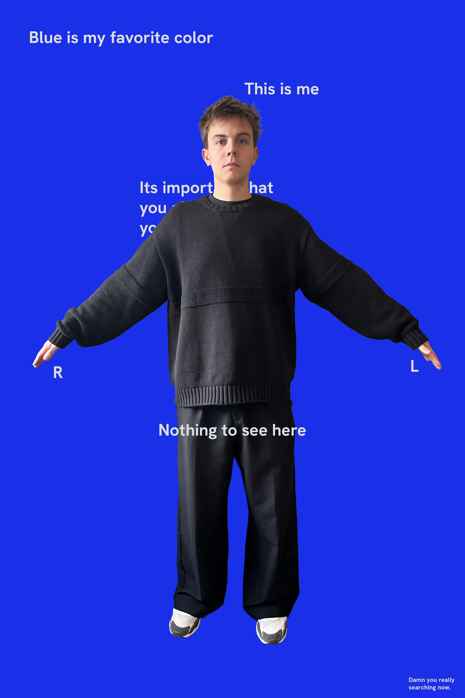

About
I'm Jorne Scholiers, I am studying Visual Design at LUCA School of Arts in Ghent. My creative style is best described as abstract, experimental and bold. I've always been drawn to visually dense work, the kind that invites you to look closer and keep discovering new details.
I'm always open to opportunities or collaborations. Feel free to contact me.
Education
- Visual Design, LUCA School of Arts Ghent, Graphic design 2023-Now
Experience
- Broos / Intern 2026
Exhibitions

